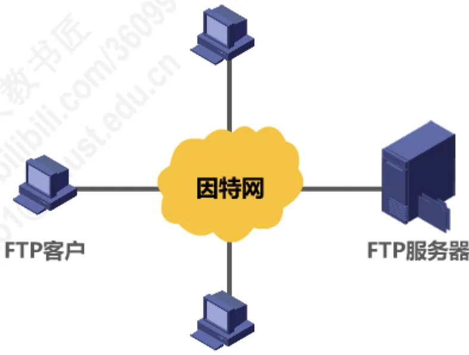
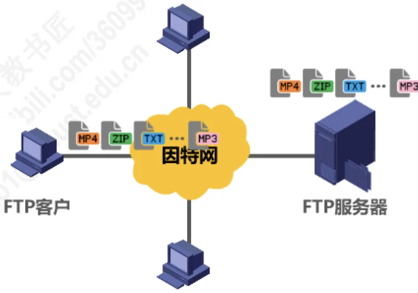
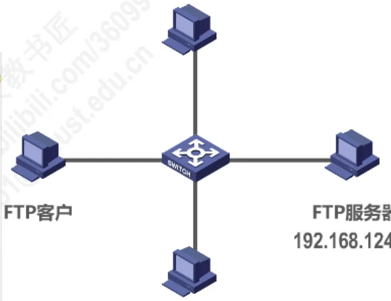
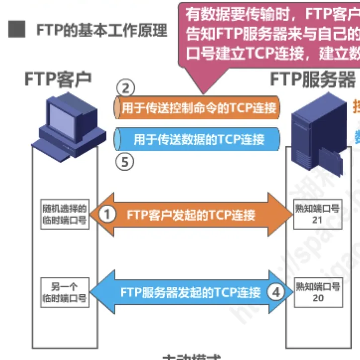
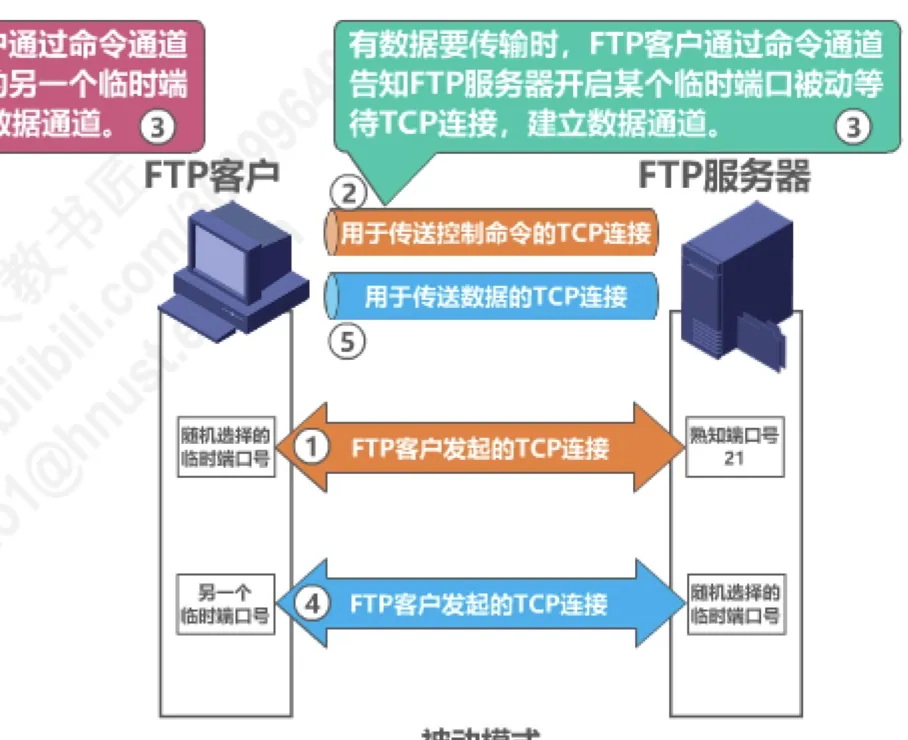

计算机通信与网络 · 第 6 章 应用层
6.5 文件传送协议FTP
把一台计算机中的文件通过网络传送到另一台计算机（哪怕相距很远），是最基本的网络应用之一，也就是文件传送；因特网上使用得最广泛的文件传送协议就是文件传送协议 FTP（File Transfer Protocol）。本节先看 FTP 解决了什么问题、有哪些特点，再看它如何以客户—服务器方式工作，然后重点剖析它的核心机制——一次会话为什么要同时使用两条 TCP（Transmission Control Protocol，传输控制协议）连接、这两条连接分别由谁发起和使用哪个端口，最后比较建立数据通道时的主动模式与被动模式。
1. 文件传送与文件传送协议 FTP
文件传送要解决的问题看起来十分朴素：把某台计算机中的文件，通过网络送到可能相距很远的另一台计算机中去。但要做到「任意两台计算机之间都能传」并不简单——不同厂商、不同操作系统的计算机，其文件命名规则、目录结构、数据表示都可能不同。FTP 的价值正在于屏蔽了各计算机系统的细节，因而适合于在异构网络中任意计算机之间传送文件：用户面对的始终是文件名与文件内容，不必关心对方运行的是什么系统。
作为应用层协议，FTP 向用户提供的访问能力也很完整：
- 交互式访问：用户在一个会话过程中与服务器交互，随时下达命令、查看应答；
- 可以指明文件的类型与格式：例如指明是否使用 ASCII 码传送，以适应文本与二进制文件的不同需要；
- 允许文件具有存取权限：访问文件的用户必须经过授权，并输入有效的口令。
FTP 的历史地位同样值得记住：在因特网发展的早期阶段，用 FTP 传送文件约占整个因特网通信量的三分之一，而由电子邮件和域名系统 DNS 所产生的通信量还要小于 FTP 所产生的通信量；直到 1995 年，万维网 WWW（World Wide Web）的通信量才首次超过 FTP。这既说明文件传送是最基础、最刚性的网络需求，也提示我们：万维网出现之后，「取文件」的工作有相当一部分转由 HTTP 承担（6.7 节），但在批量传输、网站内容上传等场合，FTP 依然是主力，6.1 节所列的经典应用层协议中它始终占有一席之地。
2. FTP 采用客户—服务器方式
FTP 沿用的是应用层最传统的客户—服务器方式（C/S 方式，见 6.2 节）：发起文件传送的一方运行 FTP 客户程序，提供服务的一方运行 FTP 服务器程序，两者都接入因特网并经由因特网互相通信。

图 1 是一幅典型的 FTP 应用示意图：若干台 FTP 客户同时访问同一台 FTP 服务器。注意，客户与客户之间虽然同在因特网上，却并不直接传递文件——一台客户要取得另一台客户机上的文件，也要先由对方（或文件本身）放到服务器上，再由自己从服务器下载。文件传送的服务关系始终是「客户请求、服务器提供」，这正是 C/S 方式与对等方式 P2P（Peer-to-Peer）的分野。

这些文件在类型、格式、大小和存取权限上都可能不同，图 2 中既有 MP3、MP4 之类的音视频文件，也有 ZIP 压缩包、TXT 文本和 PDF 文档。因此客户端必须能够指明文件的类型与格式，并在需要时携带通过服务器授权的口令——这与第 1 节列出的特点是同一件事的两面。
对服务器一端来说，投入可大可小：根据应用需求的不同，FTP 服务器可能需要一台高性能和高可靠性的服务器计算机，也可能只需要一台普通的个人计算机即可。例如在 Windows 系统中就可以添加一个 FTP 站点，把一台普通 PC 配置成 FTP 服务器，配置方法比较简单，具体步骤可以自行查阅资料；本节后续示例使用的 FTP 服务器地址为 192.168.124.16。
3. 访问 FTP 站点：图形界面与命令行
服务器配置好之后，客户怎样使用它？可以从两种客户端形态来看：一种是图形界面的文件管理器，一种是命令行工具。它们访问的是同一个 FTP 站点，只是操作方式不同。
（1）用文件资源管理器查看 FTP 站点
在 Windows 系统中，把 FTP 站点的地址交给文件资源管理器打开，就直接进入了服务器的根目录。例如访问 ftp://192.168.124.16；若要在此后继续用资源管理器浏览，可单击「视图」，再单击「在文件资源管理器中打开 FTP 站点」。这种写法其实就是 URL 的一般形式「＜协议＞://＜主机＞:＜端口＞/＜路径＞」中协议取值为 FTP 的情形（URL 的组成详见 6.7 节）。

图 3 中服务器根目录下存放着 5 个文件，它们的文件名、大小与修改时间如下表：
| 文件名 | 大小（字节） | 最后修改时间 |
|---|---|---|
| FTPDemo.mp3 | 51,799,419 | 02-03-2020 12:38 下午 |
| FTPDemo.mp4 | 62,332,687 | 02-07-2020 06:17 下午 |
| FTPDemo.pdf | 2,090,625 | 02-02-2020 09:12 上午 |
| FTPDemo.txt | 17,672 | 02-03-2020 12:28 下午 |
| FTPDemo.zip | 59,214,760 | 02-10-2020 12:33 下午 |
文件既有文本，也有压缩包和音视频，大小从十几 KB 到几十 MB 不等——FTP 只负责按客户端指明的类型与格式把文件原样搬运，并不关心文件内容是什么。这样使用图形化客户端工具的好处是：无需用户记住 FTP 客户端工具的命令，操作简便。
（2）一次命令行的 FTP 会话
另一种方式是在命令行中直接使用 FTP 客户端工具。下面这次会话连接的正是 192.168.124.16 这台服务器，关键过程如下：
C:\Users\湖科大教书匠>ftp 192.168.124.16
连接到 192.168.124.16。
220 Microsoft FTP Service
用户(192.168.124.16:(none)): anonymous
331 Anonymous access allowed, send identity (e-mail name) as password.
密码:
230 User logged in.
ftp> dir
200 PORT command successful.
125 Data connection already open; Transfer starting.
02-03-20 12:38PM 51799419 FTPDemo.mp3
02-07-20 06:17PM 62332687 FTPDemo.mp4
02-02-20 09:12AM 2090625 FTPDemo.pdf
02-03-20 12:28PM 17672 FTPDemo.txt
02-10-20 12:33PM 59214760 FTPDemo.zip
226 Transfer complete.
ftp> get FTPDemo.txt
125 Data connection already open; Transfer starting.
226 Transfer complete.
ftp: 收到 17672 字节，用时 0.00秒 17672000.00千字节/秒。
ftp> put 1.txt
125 Data connection already open; Transfer starting.
226 Transfer complete.
ftp: 发送 7 字节，用时 0.00秒 7000.00千字节/秒。
ftp>逐段来看：输入 ftp 192.168.124.16 后，客户与服务器之间的控制连接立即建立，服务器用 220 应答表示服务就绪；接着提示输入用户名，这里输入 anonymous，也就是匿名登录——服务器以 331 应答表示允许匿名访问，并提示把电子邮件地址作为口令，而匿名登录其实无需真正的密码，直接回车即可；230 表示用户登录成功。
登录之后输入 dir，服务器先回 200，再回 125，其中 125 的含义是数据连接已经打开、开始传送；文件列表传完后回 226，表示传送完成。同理，get FTPDemo.txt 是从服务器下载文件，put 1.txt 是向服务器上传文件，两者也各自建立数据连接，传完即关闭。这些提示恰好印证了后面第 5 节要强调的一点：连列目录、下载、上传这样的操作，都要在控制连接之外临时建立一条数据连接，而控制连接自始至终保持打开。
4. FTP 的常见用途
FTP 的常见用途是在计算机之间传输文件，尤其是用于批量传输文件。它的另一个常见用途，是让网站设计者将构成网站内容的大量文件批量上传到他们的 Web 服务器——一个网站往往由成百上千个文件组成，逐个上传并不现实，而 FTP 的批量上传正好合适。这两类用途也解释了 FTP 的两个设计取向：面向批量传送，并且只关心文件本身而不限定某一种文件格式。
5. FTP 的基本工作原理：两条并行的 TCP 连接
FTP 最需要理解的机制就在这里。客户和服务器之间并不是只建立一条连接，而是同时建立两条并行的 TCP 连接：一条专门传送控制命令，另一条专门传送文件数据。
（1）控制连接
控制连接由 FTP 客户发起，连接 FTP 服务器的熟知端口号 21（熟知端口号与临时端口号的概念见 5.2 节）。它在整个会话期间一直保持打开，用于传送 FTP 相关控制命令——登录、改变目录、列目录、下载、上传、退出等命令以及服务器返回的应答，走的都是这条连接。
（2）数据连接
数据连接用于文件传输，在每次文件传输时才建立，传输结束就关闭。默认情况下，FTP 使用 TCP 20 端口进行数据连接；但要注意，是否使用 TCP 20 端口建立数据连接与传输模式有关（见下一节）。
有数据要传输时，FTP 客户通过命令通道告知 FTP 服务器，来与自己的另一个临时端口号建立 TCP 连接，从而建立数据通道。也就是说，控制命令在控制连接上「谈妥」传什么、用哪个端口，真正搬运文件数据的活由数据连接完成。

（3）为什么要把两条连接分开
把控制信息与数据分开传送，看似多了一条连接的麻烦，实际上是 FTP 设计上的关键一步，好处十分具体：
- 控制连接常开，所以在文件传送的整个过程中，用户随时还可以发送控制命令，例如中止正在进行的传送；若控制命令与文件数据挤在同一条连接里，一个大文件就会把后面的控制命令统统堵住；
- 数据连接用完即关，文件传完就释放，服务器不会为了等待数据而长期占用一条连接；
- 两条连接职责单一：一条只跑简短的控制命令与应答，一条只管原样搬运文件数据，协议实现起来更简单。对照 6.6 节的 SMTP 把「怎么送」与「送什么格式」分开处理，可以看出应用层协议这种分工思路相当普遍。
这也是 FTP 与许多只用一条连接的协议不同的地方：控制连接负责「说话」，数据连接负责「搬东西」，两者互不干扰。
6. 主动模式与被动模式
数据连接由谁发起、服务器用哪个端口，取决于 FTP 的工作模式。FTP 有两种工作模式：主动模式和被动模式。
（1）主动模式
在主动模式下，建立数据通道时由 FTP 服务器主动连接 FTP 客户：客户先随机选择一个临时端口号并通过命令通道告知服务器，服务器再用自己的熟知端口号 20 主动发起 TCP 连接，连到客户的那个临时端口上。图 4 画出的就是主动模式：控制连接由客户连到服务器的 21 端口并贯穿会话，数据连接则由服务器从 20 端口连向客户随机选择的临时端口。
（2）被动模式
在被动模式下，有数据要传输时，FTP 客户通过命令通道告知 FTP 服务器开启某个临时端口被动等待 TCP 连接，随后由 FTP 客户发起 TCP 连接去连服务器开启的那个临时端口，从而建立数据通道。可见两种模式最根本的差别是数据连接由谁发起：主动模式由服务器发起，被动模式由客户发起。

（3）两种模式的差别与端口号
把两种模式放在一起比较，关键差别有两点：一是发起方——主动模式由服务器连客户，被动模式由客户连服务器；二是数据连接使用哪个端口——主动方式使用 TCP 20 端口，被动方式则由服务器和客户端自行协商决定，不再固定使用 20 端口。控制连接不受影响：两种模式下都由客户连到服务器的 21 端口，并在整个会话期间保持打开。
为什么还要有被动模式？可以这样理解：如果客户位于防火墙或网络地址转换 NAT（Network Address Translation）设备之后，服务器从外部主动连到客户的临时端口往往会被拦下；改由客户主动向外发起数据连接，就能绕开这个障碍。由此也得到本节最容易出错的一点：21 端口始终用于控制连接，20 端口只在主动模式下用于数据连接。
图 6 把本节的主要内容收在一页上，复习时可以按「特点 → 两条连接 → 两种模式」的顺序回忆。
本节小结
- 文件传送是最基本的网络应用之一，FTP 是因特网上使用得最广泛的文件传送协议：它提供交互式访问，允许客户指明文件的类型与格式（如是否使用 ASCII 码）、允许文件设置存取权限，并屏蔽各计算机系统的细节，因而适合在异构网络的任意计算机之间传送文件。
- FTP 采用客户—服务器方式：客户发起文件传送，服务器提供服务；服务器可以是一台高性能、高可靠性的计算机，也可以只是一台普通 PC。FTP 的常见用途是批量传输文件，以及让网站设计者把大量网站文件批量上传到 Web 服务器。
- 一次 FTP 会话中，客户与服务器之间建立两条并行的 TCP 连接：控制连接由客户连到服务器的 TCP 21 端口，在整个会话期间一直保持打开，用于传送控制命令；数据连接用于文件传输，每次文件传输时才建立，传输结束就关闭（默认使用 TCP 20 端口）。
- 控制信息与数据分离的好处：控制连接常开，文件传送过程中仍可随时发送控制命令（如中止传送）；数据连接用完即关，不长期占用资源；两条连接职责单一，实现也更简单。
- 数据通道的建立分两种模式：主动模式由服务器用 TCP 20 端口主动连接客户的临时端口号；被动模式由服务器开启临时端口号被动等待，客户主动发起连接，端口号由服务器和客户端协商决定。所以「21 端口用于控制连接」总是成立，「20 端口用于数据连接」只在主动模式下成立。